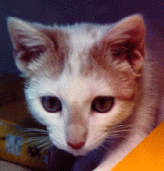

Marlowe was upset that there were all these movies, none of which he was starring in. I found the perfect role for his movie debut: this is an example from dynamical systems, in which the mathematician V.I. Arnold's cat first appeared (as a still series of images). This may be the first cinematic version.
This movie shows what happens to the torus (standard identification of the square), when mapped by a linear Anosov diffeomorphism. The mapping has a stretching and a contracting direction. Each toral Anosov diffeomorphism is equivalent to a linear one.
How does this look on the standard embedded image of the torus? Marlowe wouldn't try it, as he was afraid to get his tail tied in knots, but his costar The Clown was willing, and appears in The Arnold Clown Map Movie.
Credits:
Starring: Marlowe the Cat
Action: The Arnold Cat Map
Director: Evelyn Sander
Camera operator: Matlab
Editing and Production: GifMerge
The Map: I originally had here that this was introduced by Anosov
but have since been told that it was known earlier.
V.I. Arnold added the cat in the book Ordinary Differential Equations.
The Theorem: Franks, 1971
Filmed on location on the Surface of the Torus
The small print: the map is the linear map on the torus induced by the
matrix
2 1
1 1
Here's a reference for a visual explanation.